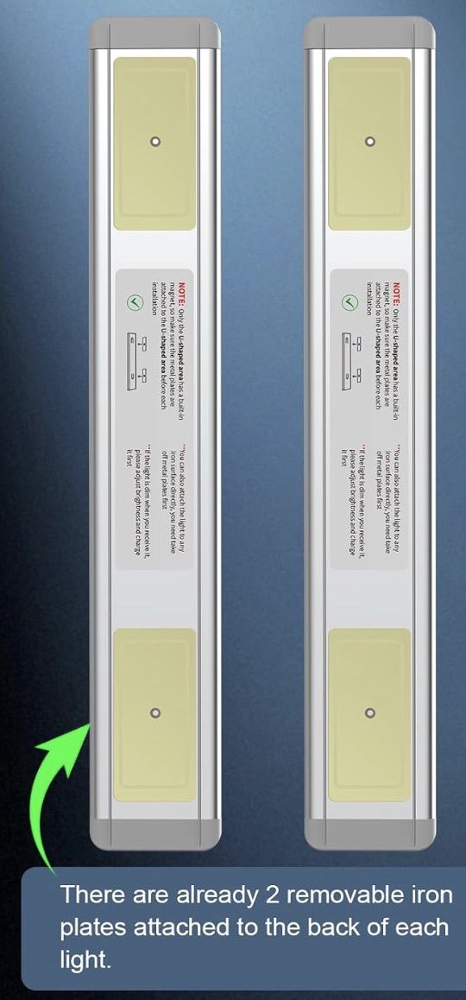
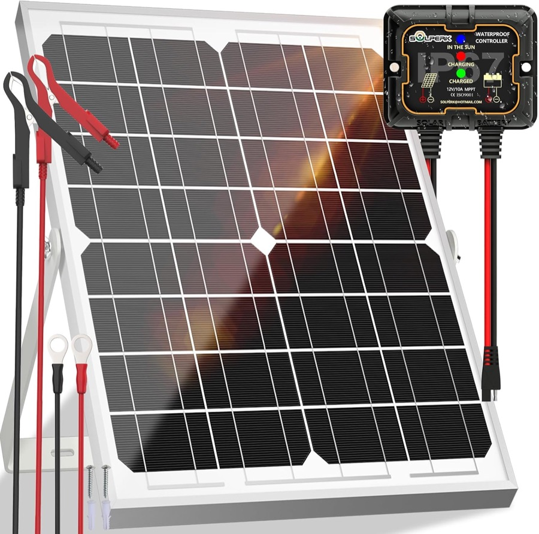

From printer to pole
Seven part designs, one ordinary printer bed, and two people with hand tools. That is everything it takes to build a Nura light.
Two things you can buy online
Nura began with a magnetic, rechargeable kitchen light and a small solar kit meant for keeping a car battery topped up. Put them on a pole and you already have a streetlight. The real question was how to make it last outdoors for years, and how to know when it breaks.
- The light grew up. The indoor kitchen bar became a 10 W, IP65 outdoor lamp. The idea of a lamp anyone can swap in minutes stayed, now with a waterproof plug.
- The panel got bigger. 20 W became 30 W, so a brighter lamp still runs through dusty weeks.
- The light learned to talk. A small sensor board lets each light check on its neighbours and call for help.


Twelve pieces, seven designs
Each part has one job. Print them once, and the only other things you need are a store-bought panel, battery, lamp and a few bolts.
-
Collar
The ring around the pole. Three bolts at 120° make the 3-prong clamp.
×1134 × 145 mm -
Jaw
Curved grip pads. Each bolt pushes one onto the pole, so it centres itself on 60–120 mm poles.
×315 × 53 mm -
Electronics bay
Sealed box for the battery, charge controller and sensor board. Three cable glands underneath.
×1166 × 117 mm -
Lid
Security screws and a hidden magnet that tells the sensor if the box is opened.
×1166 × 111 mm -
Panel arm
Holds the solar panel at the right angle for your city. Default 15°.
×1234 × 240 mm -
Panel bracket
Corner clips that wrap the panel's aluminium frame and bolt to the arm.
×450 × 50 mm -
Lamp mount
The 10 W lamp bolts on here and plugs into a waterproof socket. A small hood aims the light sensor at the lamp.
×1230 × 64 mm
Four stages
Open a stage to see its steps.
1PrintAbout 16 hours per light, in the workshop
- Print all 12 pieces in ASA (PETG if ASA isn't available). PLA softens in Sahel and East African heat.
- Use white or light grey filament, which keeps the battery box cooler.
- Print the collar and jaws with 60% infill, because they carry the clamp load.
- A five-printer workshop makes enough parts for about 7 lights a day.
2PrepareAbout 20 minutes, on the bench
- Press the three M8 nuts into the collar and thread the bolts in from outside.
- Screw the waterproof M12 lamp socket into the lamp mount.
- Fit the battery, charge controller and sensor board into the bay, then fit the cable glands.
- Flash and label the sensor board with the light's ID, for example RC-A-04.
3MountAbout 25 minutes, on the pole, two people
- Put the collar around the pole with the three jaws inside it.
- Tighten the three bolts a third of a turn each, in turn, until firm (about 12 N·m).
- Bolt on the panel arm, clip the four brackets to the panel, and face the panel south.
- Bolt the bay and the lamp mount to the collar.
4Wire and sealAbout 20 minutes, then it joins the network
- Connect the battery first, then the panel, then close the fuse.
- Bolt the 10 W lamp to its mount and click in its waterproof plug.
- Seat the rubber gasket and close the lid with the security screws.
- Wait for the purple blink. On the dashboard, both neighbours should show the new light as reachable.
Made for heat and sun
| Material | ASA, or PETG |
| Colour | White or light grey |
| Layer height | 0.2 mm |
| Walls | 4 perimeters |
| Infill | 40% gyroid, 60% for collar and jaws |
| Filament | About 400 g per light (≈ $9) |
Three things to test
- Clamp grip over time. Plastic slowly relaxes under load in heat. Re-tighten after one month, or add a steel band as backup.
- Heat inside the box. Keep the battery below 60 °C. Add a sun shade if readings run hot.
- Wind on the panel. The 30 W panel puts about 450 N on the arm at its 2,400 Pa rating. Load-test the arm and brackets to that.
The 3D model is adjustable: change the pole size or panel angle, then print each part.